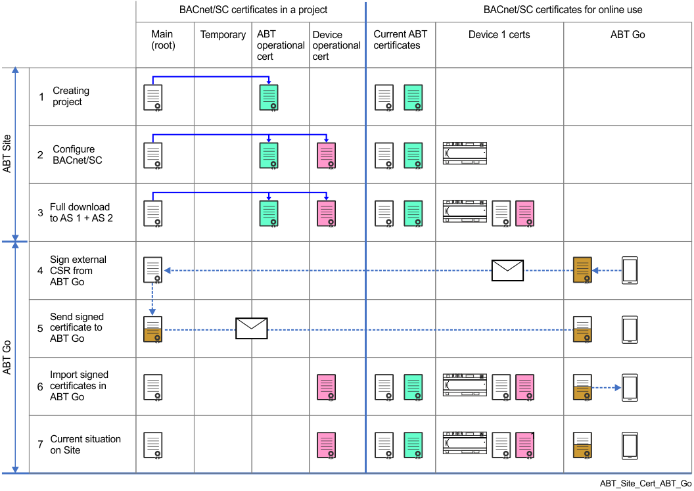

ABT Site as CA with ABT Go
此示例将 ABT 站点显示为 BACnet/SC 网络的 CA（认证机构）。内部证书应用于 Desigo 设备。 ABT Go 的证书必须由同一个 CA （例如，同一个 ABT 站点项目）根据 ABT Go 提供的证书签名请求进行签名。当工作流程中发生更改时，证书颜色会显示。

| Description |
1 | 根证书（白色）和 ABT 站点操作证书（绿色）是在创建 ABT 站点项目时创建的。此根证书在到期日期之前或客户请求续订根证书之前都有效。 Notes:
|
2 | 将设备分配到 ABT 站点后，可以创建设备操作证书（粉色）。此时，设备中尚未加载任何证书。 Configuring BACnet/SC具有集线器、故障转移集线器和节点。 Note：每个设备都有自己的基于序列号的操作证书。无法多次使用证书。 |
下载操作证书需要完整下载。下载后，设备可以使用 BACnet/SC. 进行操作 Note：在现有项目中，需要从设备回读当前参数和工程数据。 | |
从 ABT Go 收到的“证书签名请求”(csr) 由 ABT 站点签名为 CA，以便为 ABT Go 创建 BACnet 操作证书。 | |
5 | 签名的操作证书将以 p12 格式文件发送回 ABT Go。 |
6 | 将 ABT 站点签名的操作证书导入到 ABT Go 中。 ABT Go 内部转换为 pfx 格式。 |
7 | 显示整个项目使用 BACnet/SC. 运行的状态 |